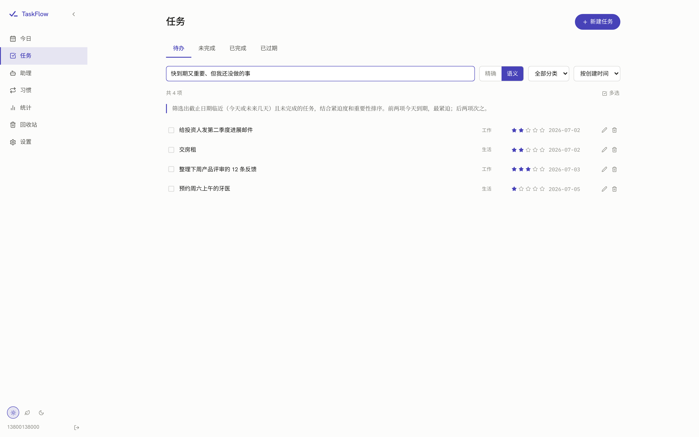
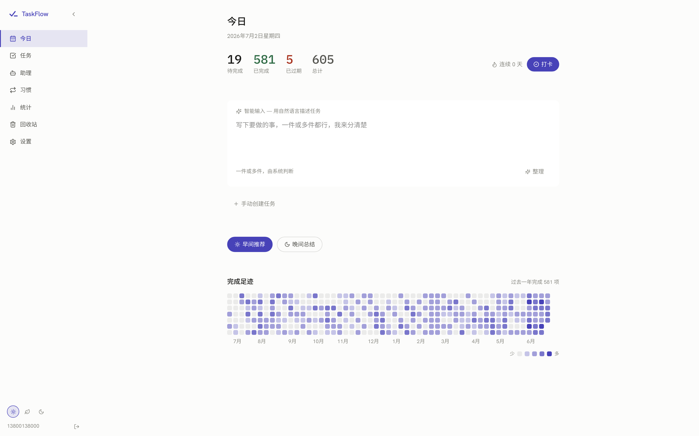
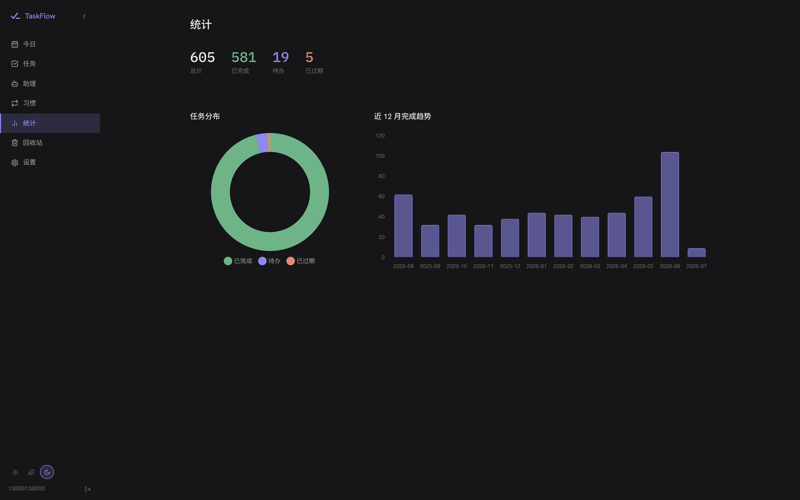
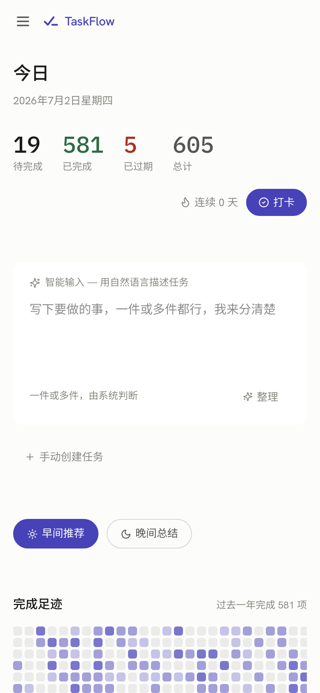
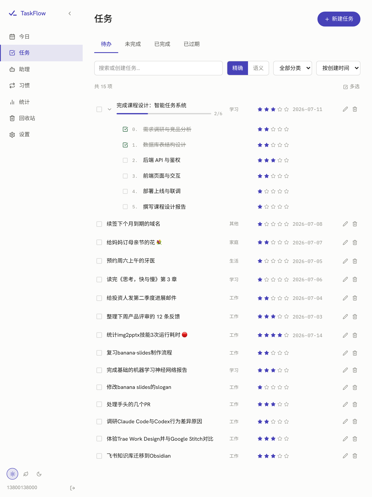

TaskFlow
脑子里塞满了事，却不知从哪下手。
用自然语言，说出来就好
一句话，
全部分好
标题、分类、星级、时间，AI 自动解析成可编辑草稿，确认后才入库。
✦
智能输入 — 用自然语言描述任务
一件或多件，由系统判断
✦ 整理
✦
已整理为可编辑草稿，确认前可修改任意字段
跟设计团队过新首页
明天下午三点
工作
★
★
★
★
★
07-03
✕ 放弃
✓ 确认入库
✦
已整理为可编辑草稿，确认前可修改任意字段
完成季度报告初稿
本周五前
工作
★
★
★
★
★
07-04
✕ 放弃
✓ 确认入库
智能助理 · Agent
用聊的，
帮你改
多轮对话读写任务；每次改动，都先征求你的同意。
✦
智能助理
帮我把「续签域名」改到这周五，并标为重要
✓
已找到任务「续签域名」
好的，我把它的截止改到本周五、星级升到重要 —— 请确认：
✎ 需要确认 · 修改
把「续签域名」改到 本周五 · 标记为重要
截止
07-08
→
07-04 周五
星级
★
→
★★★
✕ 拒绝
✓ 接受
✓
已更新「续签域名」
目标拆解
大目标，
拆成小步骤
一个大任务，自动分解为有序、可推进的子任务。
完成课程设计：智能任务系统
0/6
✓
需求调研与竞品分析
✓
数据库表结构设计
后端 API 与鉴权
前端页面与交互
部署上线与联调
撰写课程设计报告
用说的，
就能找到
语义检索：重要、还没做、快到期 —— 它都懂。
taskflowai.asia/app

看得见的坚持
0
项已完成
完成饼图、月度趋势、一年的专注足迹 —— 你的努力，一目了然。
taskflowai.asia/app

网页
·
桌面
·
随身
深色浅色，随心切换。
taskflowai.asia/app



给 TaskFlow 拍一支 30 秒宣传片
TaskFlow
用
AI
重塑你的任务清单
免费开始使用
→
taskflowai.asia